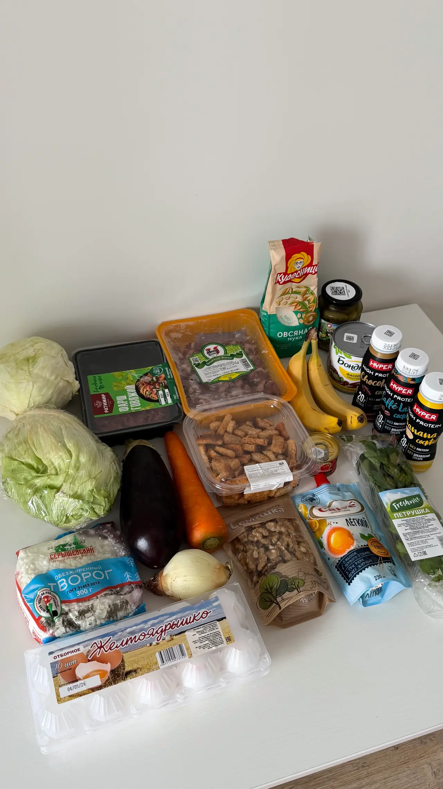
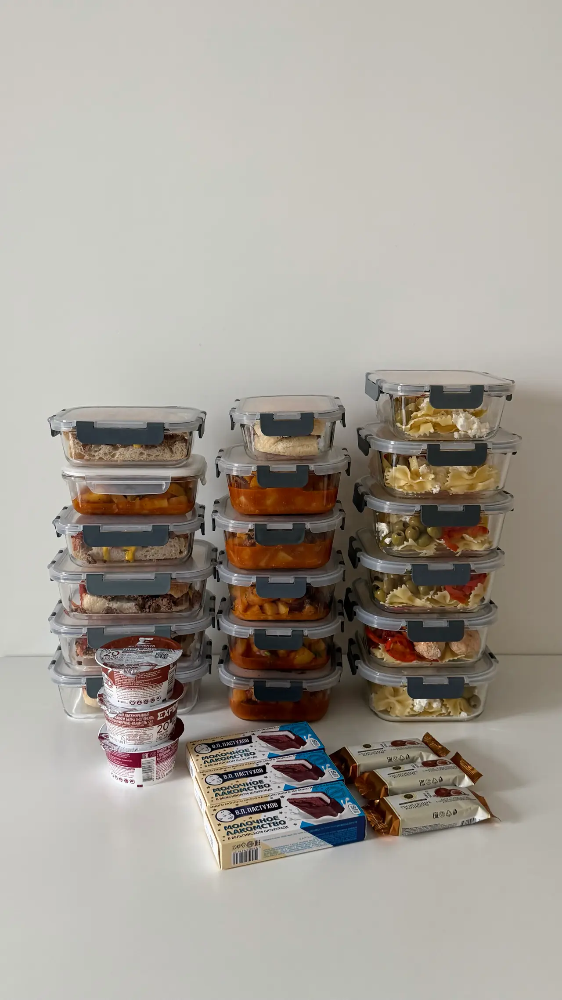
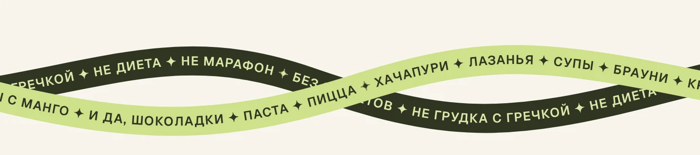
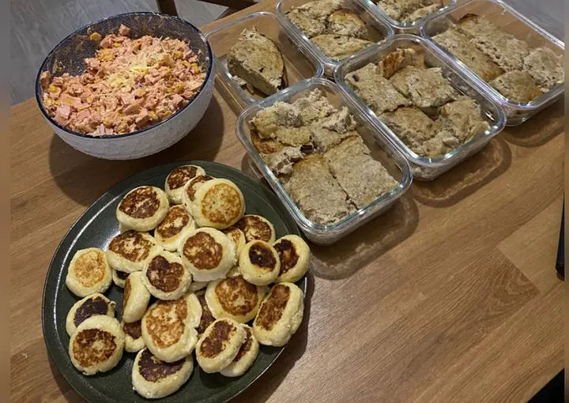
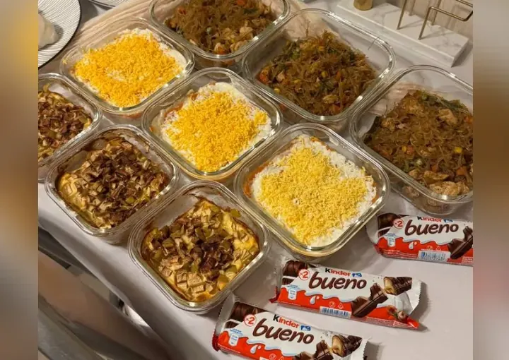

Выбираешь рацион
Меню на 2–3 дня уже собрано. Выбираешь подходящее по калорийности.


Кристина · закрытый канал «Что поесть»
Оплата в Telegram-боте — ссылка на закрытый канал придёт сразу после оплаты.
Готовые рационы с КБЖУ от нутрициолога Кристины Василиу.


Девять вечера. Ты у холодильника и снова решаешь, что приготовить и как вписать ужин в калории.
Я уже собрала меню, посчитала КБЖУ и составила список покупок.




Меню на 2–3 дня уже собрано. Выбираешь подходящее по калорийности.
Открываешь список с граммовками и ссылками на продукты в «Пятёрочке», «Ленте» и других магазинах.
За 1,5–2 часа готовишь на три дня. Видео подскажет, с чего начать и что делать параллельно.
Раскладываешь еду по контейнерам, а в следующие дни просто достаёшь готовые порции из холодильника.
С готовым меню проще придерживаться своего плана питания.
Знакомые блюда с рассчитанными порциями помогают оставаться сытой в дефиците.

Десерт есть в каждом рационе, его калории уже учтены.
Меню уже составлено, а готовая еда ждёт в холодильнике.

Готовишь одни блюда для всей семьи, а порции подбираешь каждому.

Выбери калорийность, чтобы увидеть пример рациона из канала.


В рационах есть паста, пицца, хачапури, лазанья, супы, брауни, креветки, роллы с манго и шоколадки — это не диета и не марафон.
Найди готовое меню по калорийности в закрытом Telegram-канале.


Я нутрициолог. Собрала рационы из блюд, с которыми сама похудела и которые по-прежнему готовлю дома.
Как рационы вписались в жизнь тех, кто уже готовит по ним.

«Теперь кайфую от одной только мысли, что три дня можно не готовить»
«Готовлю всё по рационам для себя, мужа и двух деток. Очень сытно, вкусно, а главное — подробно по полочкам»
«Без всяких там слёз единорога и прочих недоступных ингредиентов. И что немаловажно, всё готовится очень быстро»
«Мой страх остаться голодной отпал… Уже мечтаю снова о запеканке с рикотой»

«У меня ушло на всё дай бог часа 2–2,5»
«18 рационов я уже приготовила. Всё очень вкусно и мега-разнообразно!»
Вся база рационов — в обоих тарифах. Ссылку на канал бот пришлёт сразу после оплаты.
1 790 ₽
один платёж — и без продлений
1 190 ₽
≈ 400 ₽ в месяц — дешевле одной доставки
В меню есть паста, пицца, супы и десерты. Для каждого блюда уже посчитаны порции и КБЖУ.
Да. В видео показано, с чего начать и как готовить несколько блюд параллельно. Мой муж Макс раньше почти не готовил, а теперь сам повторяет рационы по видео.
В каждом списке указано, что и сколько купить. Есть ссылки на продукты в «Пятёрочке», «Перекрёстке», «Ленте», «Магните» и других магазинах. Можно заказать онлайн или взять список с собой в магазин.
1,5–2 часа на рацион, которого хватает на 2–3 дня.
Готовые рационы рассчитаны на 1400–1800 ккал в день. В канале есть запрос для нейросети, который поможет пересчитать порции под твою норму для снижения, поддержания или набора веса.
Да. Приготовь те же блюда на всех и отмерь каждому свою порцию.
На тарифе «навсегда» — нет, это разовый платёж. «3 месяца» продлевается автоматически, отменить можно в боте в любой момент.
Один вечер у плиты — и три дня ты занимаешься тем, что любишь, а ужин уже ждёт в холодильнике. Я собрала эту систему для себя. Теперь она твоя.
— Кристина